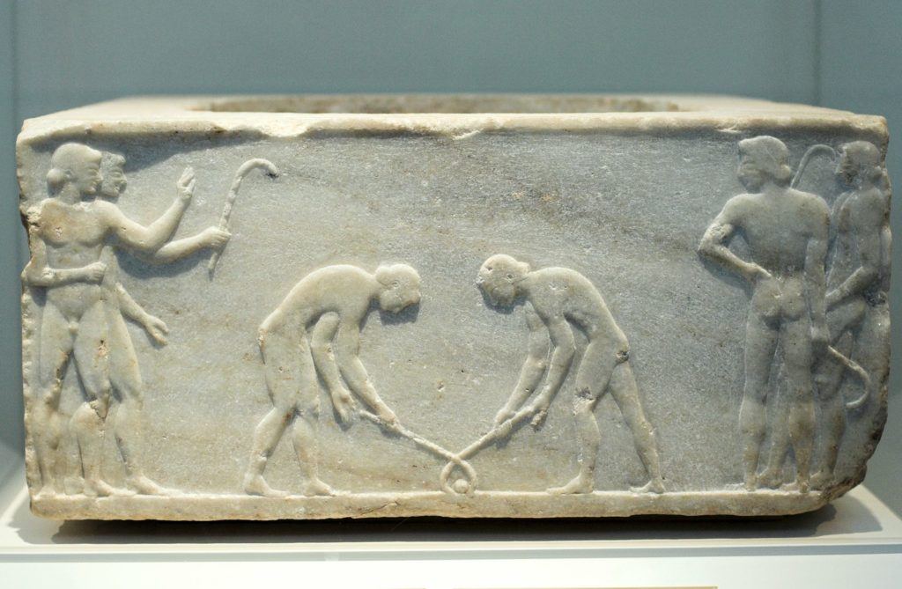
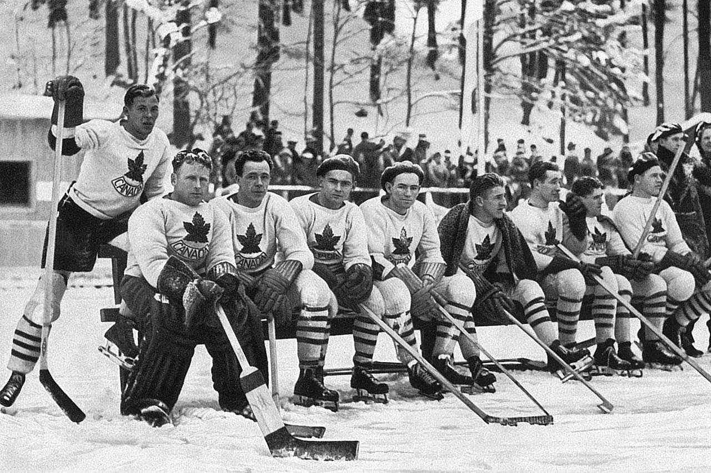
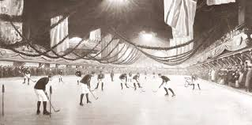

The History of Hockey: A Journey Through Time
Published: 1/12/2024
Hockey, a fast-paced and exhilarating sport, boasts a rich history that spans centuries and continents. Its origins are deeply rooted in humanity’s natural inclination to engage in competitive, stick-and-ball games. Over time, hockey has evolved into a global phenomenon with various forms, including ice hockey, field hockey, and roller hockey, each with its own unique characteristics.
Ancient Beginnings
The earliest evidence of hockey-like games dates back to ancient civilizations. Historical records suggest that stick-and-ball games were played in ancient Egypt, Greece, and Persia. In Greece, the game "kerētízein" was played with curved sticks, resembling modern hockey sticks. These early games, often part of cultural and religious practices, were precursors to the organized sports we recognize today.
In medieval Europe, games like "shinty" in Scotland, "hurling" in Ireland, and "bandy" in England were widely popular. These sports involved teams using sticks to drive a ball toward a goal. They were often played on grass or frozen fields, depending on the season and region. These early iterations laid the groundwork for both modern field hockey and ice hockey.
The Birth of Modern Hockey
Modern hockey began to take shape in the 19th century. Field hockey was formalized in England, where the first rules of the game were codified in the 1860s. The establishment of the Hockey Association in London in 1886 marked a pivotal moment, as it provided a standardized framework for the sport. Field hockey quickly gained popularity, particularly in British colonies, where it became an integral part of the sporting culture.
Ice hockey, on the other hand, traces its origins to Canada. In the mid-19th century, British soldiers stationed in Nova Scotia adapted field hockey for icy conditions, incorporating elements of lacrosse. The first recorded indoor ice hockey game took place in Montreal in 1875, and by 1877, the first set of ice hockey rules was published. The sport rapidly gained traction, leading to the formation of leagues and the iconic Stanley Cup, first awarded in 1893.
Global Expansion and Olympic Inclusion
The 20th century saw hockey expand globally. Field hockey was introduced to the Olympic Games in 1908, becoming a staple event for both men and women. Countries like India and Pakistan dominated the early years of Olympic field hockey, showcasing exceptional skill and teamwork.
Ice hockey made its Olympic debut in 1920 at the Summer Games before becoming a permanent fixture in the Winter Olympics from 1924 onwards. Canada initially dominated the sport, but European nations, particularly the Soviet Union, Sweden, and Finland, emerged as strong competitors in subsequent decades.
The Evolution of the Game
Technological advancements and professional leagues have played significant roles in hockey's evolution. Innovations in equipment, such as composite sticks and advanced protective gear, have improved player safety and performance. In ice hockey, the establishment of the National Hockey League (NHL) in 1917 transformed the sport into a professional spectacle, drawing millions of fans worldwide.
Similarly, field hockey underwent modernization with the introduction of synthetic turf fields, which enhanced the speed and precision of the game. The International Hockey Federation (FIH), established in 1924, continues to govern and promote the sport globally.
Hockey Today
Today, hockey is a unifying force, enjoyed by millions across continents. From the frozen rinks of North America to the sun-drenched fields of Asia, it is a sport that transcends boundaries, fostering camaraderie and competition. Major international tournaments, such as the Hockey World Cup and the Olympic Games, showcase the best talent and highlight the sport’s enduring appeal.
In conclusion, hockey’s history is a testament to its adaptability and universal appeal. From its humble beginnings in ancient stick-and-ball games to its current status as a global sport, hockey continues to captivate and inspire. Its journey reflects not only the evolution of a game but also the shared human desire for connection, competition, and excellence.
Comments